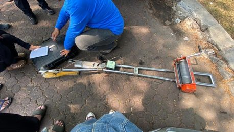

Program Studi Teknik Sipil · Universitas Pertamina
Hydro-Environmental System Lab
Berilmu·Bermanfaat·Berdampak
Laboratorium riset hidrologi, sumber daya air, dan sistem lingkungan di Universitas Pertamina. Untuk data pemantauan hujan, banjir, debit, dan kekeringan secara near real-time, kunjungi HESLab Portal.
9
Topik Riset
1
Proyek Penelitian
1
Publikasi
14
Dataset
6
Anggota
2
Mitra Kolaborasi
Kegiatan Terbaru

Survei Debit Sungai
Survei debit sesaat dilakukan sebagai bagian dari penelitian DIKTI -Integrasi Data Satelit, Pemodelan Hidrologi, dan Machine Learning untuk Peringatan Dini Banjir JABODETABEK-. Data yang diperoleh dimanfaatkan untuk kalibrasi model hujan-limpasan dan peningkatan keandalan prediksi banjir.